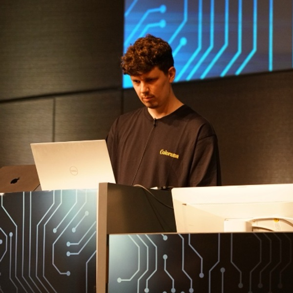
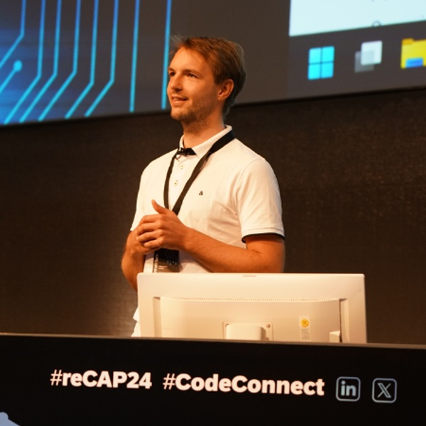

9:00–9:10
Audimax
Welcome to re>≡CAP 2026!
Ole Lilienthal, SAP SE - CAP Team
9:10–9:50
Audimax
Join the keynote by the founder and Chief Architect of CAP - Daniel Hutzel (and maybe additional team members).
Daniel Hutzel, SAP SE - CAP Team
10:00–10:40
W1/W2
AI agents are transforming how we interact with enterprise applications, but how do you actually build one? In this session, we'll go beyond the hype and dive into the code. Using the Smart Monitoring Agent (demonstrated at SAP TechEd) as our real-world example, you'll learn how to create intelligent, code-based AI agents that combine SAP AI Core with CAP and UI5. We'll cover the complete journey from development to deployment. What you'll take away: - How AI-powered development tools like Claude Code and MCP servers for CAP/UI5 can accelerate your agent development - A live demo of the Smart Monitoring Agent in action - The technical architecture and code patterns for integrating SAP AI Core into your CAP applications - Practical insights on building conversational AI agents that actually work in enterprise scenarios Whether you're exploring AI capabilities for your own projects or looking to understand what's possible with SAP's AI stack, this session will give you the foundation to start building.
Wouter Lemaire, Independent Consultant
10:00–10:40
Audimax
Learn about the latest hotness in CAP tools like - `cds repl` with queries - Debugging apps on Kyma - CDS Project outline in VS Code - CAP in browser - ...
Christian Georgi, SAP SE - CAP Team
10:00–11:30
W3
IMPORTANT: Please do the required prerequisites for the workshop upfront: https://github.com/SAP-samples/btp-secure-development/tree/main/exercises/ex0 -------------------------- In an era of persistent cyber threats, secure software development is non-negotiable. This hands-on workshop equips developers with practical expertise to identify and remediate OWASP Top 10 vulnerabilities in SAP BTP applications built with Cloud Application Programming Model (CAP) and Node.js. Through immersive exercises, participants experience vulnerabilities from both attacker and defender perspectives, then implement proven mitigation techniques using SAP BTP's built-in security services. Each module follows a structured methodology: - Identify and analyze vulnerable code snippets to understand core security flaws. - Understand the real-world impact by seeing how these vulnerabilities are exploited. - Remediate risks by leveraging SAP BTP’s built-in security services and secure CAP development practices. - Validate the effectiveness of your security patches. Join us to master secure, cloud-native development and walk away with actionable takeaways to confidently protect your SAP BTP solutions! Prerequisites: Node.js and GitHub experience; environment setup required before workshop : https://github.com/SAP-samples/btp-secure-development/tree/main/exercises/ex0
Abdelkader Abdelaziz, SAP SE
Jürgen Adolf, SAP SE
10:40–10:50
Audimax
Refresh your mind & body - enjoy this beautiful short break!
11:00–11:20
Audimax
Last year, I introduced cds-caching as a powerful tool for boosting performance at the CAP application layer. This year, we zoom out, taking a broader look at the full landscape of data caching, replication, and federation strategies available in the CAP ecosystem. There already is a rich set of options available: CAP's official xtravels example, cap-js-community/common's service replication into SQLite, Redis integration via RedisClient and cds-caching, and the upcoming cds-data-federation plugin, to name just a few. But with choice comes complexity: when should you cache? When does replication make more sense? And where does federation fit in? In this talk, I'll walk through a curated selection of solutions, highlight their trade-offs, and share practical guidance on which approach fits which scenario. You will leave with a clearer sense of which tool to reach for, and when.
Mike Zaschka, Independent SAP Solution Architect, Developer and Consultant
11:00–11:40
W1/W2
AI is reshaping enterprise development, and CAP is evolving to meet it head-on. Discover how CAP services can be seamlessly exposed as endpoints consumable by AI agents, enabling smooth and standards-aligned integration into modern AI workflows. Learn how the CAP AI plugin unlocks powerful built-in capabilities such as RPT-1, making it easier than ever to bring AI-driven functionality into your applications. Beyond that, we’ll explore how additional features like embeddings extend CAP’s reach even further into the AI landscape. We’ll close with a deep dive into an approach for building intelligent, code-driven agents that weave all of these capabilities together with CAP’s robust, battle-tested enterprise features - giving you a solid foundation for building the next generation of AI-powered business applications.
Max Eckert, SAP SE - CAP Team
Simon Engel, SAP SE - CAP Team
Markus Riedinger, SAP SE
Peter W. Szabo, SAP SE
11:30–11:50
Audimax
In this session we'll look at how the CAP MCP development server gives AI coding assistants direct access to CAP documentation, enabling them to generate code that actually follows CAP conventions and APIs. Combined with a growing library of CAP-specific skills and prompts, this significantly improves the quality of AI-assisted CAP development in tools like Claude Code or GitHub Copilot. We'll show practical examples of what works well today and where the boundaries still are.
Daniel Schlachter, SAP SE - CAP Team
Stefan Rudi, SAP SE - CAP Team
11:35–13:35
W3
In just two hands-on hours, you'll develop a SAP CAP application and transform it into a service that AI agents can reliably interact with. Together, we'll cover how to design CDS functions and actions as agent-consumable operations, and structure your CAP services for clean, predictable integration with LLM-based tools. During the second half, we'll demonstrate how an AI agent can discover and call real CAP service endpoints, including a live walkthrough of an agent interacting with business data. Along the way, we'll share practical patterns for designing agent-friendly services, handling authentication, and ensuring robust API interactions. You’ll leave with a well-structured CAP service, ready for agent integration, plus actionable patterns to take back to your own projects.
Ram Prasad GS, Aarini Consulting B.V.
Arun Krishnamoorthy, Aarini Consulting B.V.
11:40–11:50
W1/W2
Refresh your mind & body - enjoy this beautiful short break!
12:00–12:40
Audimax
Today we need to be more efficient and concise than ever, stop writing code we don't need to, and avoid tasks that slow down our development loops, letting the framework do the heavy lifting for us. In this session we'll demonstrate two different affordances that enable that. First, we'll show the power of expressions, what they are, how and where they can be used, and why you should know about them. Then we'll show how mocking abstracts us from the tedium and ceremony, allowing us to iterate fast on data, auth, messaging and remote services during development.
Patrice Bender, SAP SE - CAP Team
DJ Adams, SAP SE
12:40–12:50
Audimax
Refresh your mind & body - enjoy this beautiful short break!
13:10–13:50
W1/W2
How do you go from idea to production-ready CAP app without losing momentum? In this ReCAP Deep Dive, we walk through a practical, end-to-end development approach that combines proven CAP architecture patterns with AI-assisted workflows and lets your application grow as you go. Starting from domain modeling, we shape robust data models, design use-case-driven CAP services and build a runnable application enriched with realistic test data. CAP propagates the concept of late-cut micro services. Instead of eagerly cutting our application into many micro services we start with a monolithic application and develop into multiple dedicated modules with clear boundaries. Leveraging outbox and task queues we show how asynchronous processing patterns can help interaction between different modules.
Lukas Theis, SAP SE
Johannes Vogt, SAP SE - CAP Team
Robin de Silva Jayasinghe, SAP SE - CAP Team
14:00–14:40
Audimax
CAP plugins dramatically simplify integration with SAP BTP services, turning cross-cutting concerns into drop-in capabilities - and the ecosystem keeps growing. This session demystifies the plugin model, why it scales effortlessly across projects, and how it can cut integration effort by an order of magnitude. We’ll shine a spotlight on what’s new and noteworthy, showcasing the enhanced attachments plugin, the renovated change tracking plugin, a new notifications plugin for Java, the brand-new SAP Build Process Automation (SBPA) plugin and many more, while also giving a glimpse into what’s happening in the community and at partners. Whether you’re new to CAP plugins or looking to level up your existing setup, you’ll leave with practical guidance on when and how to apply them to get the most out of your CAP projects.
Max Eckert, SAP SE - CAP Team

Matthis Vansteenhuyse, Expertum
14:00–14:40
W1/W2
This session explores the advantages of embracing declarative programming in CAP (Cloud Application Programming Model). We’ll delve into how this approach can significantly minimize the need for traditional code, ensuring consistent validations between the backend and the OData annotations required by the UI. By adopting declarative mechanisms such as calculated elements, annotation based constraints (@assert, @assert.range, @assert.format, …), and field control (readonly, mandatory), you can streamline the development process and enhance maintainability. We’ll also cover status transition flows, which provide a declarative way to define and enforce valid state transitions in your business objects, reducing the need for custom validation logic while ensuring data integrity throughout your application’s lifecycle. By the end of the session, attendees will understand how declarative programming in CAP can solve common pain points and how to implement these practices in a test-driven way. Join us to discover practical benefits and methods for adopting declarative programming in CAP.
Adrian Görler, SAP SE - CAP Team
Robin de Silva Jayasinghe, SAP SE - CAP Team
Vitaly Kozyura, SAP SE - CAP Team
14:15–16:15
W3
Try out new CAP features yourself! - Declarative Constraints - Status Transition Flows - using the cds repl - app specific MCP servers - Draft validations - Extensibility using constraints, flow and custom code - and more
Daniel Schlachter, SAP SE - CAP Team
Nick Josipovic, SAP SE - CAP Team
Steffen Weinstock, SAP SE - CAP Team
Johannes Vogt, SAP SE - CAP Team
14:40–14:50
Audimax
Refresh your mind & body - enjoy this beautiful short break!
15:00–15:20
W1/W2
The CAP Node.js ecosystem continues to evolve rapidly within the cap-js-community. This session provides a focused technical update on the latest enhancements, with particular emphasis on the WebSocket modules and the newly introduced common utilities module. We will deep-dive into the recent advancements in real-time communication support, including the introduction of Event-Driven Side Effects. In addition, we will present the new common module, which consolidates frequently used helpers, abstractions, and cross-cutting utilities into a standardized, reusable package.
Oliver Klemenz, SAP SE
15:00–15:20
Audimax
SAP CAP gives you an incredible foundation to build cloud-native applications - but when it comes to managing connections to external systems, you're largely on your own. Every project ends up with its own ad-hoc approach: hardcoded URLs, scattered credentials, no standard way to define or govern integrations. There has to be a better way. In this session, we showcase cap-connect - a production-ready, open-source CAP plugin developed by Aarini Consulting that brings first-class connection management to any SAP CAP application, without writing a single line of integration boilerplate. We'll walk through the architecture of cap-connect: how it is structured as a self-contained CAP plugin that transparently plugs into any CAP application at startup, exposes a fully declarative ConnectorService via CDS, and provides a built-in admin portal - all activated by a single npm install. The session focuses on what was built, why it was designed that way, and the architectural decisions that make it reusable, non-intrusive, and extensible - so that any CAP application can adopt it without modification. We'll also share how cap-connect became the connect layer for Prodsphere, Aarini's own CAP-based product - how it cleanly separated the integration concerns from the business logic, and why that separation made the product significantly simpler to maintain and extend.
Ram Prasad GS, Aarini Consulting B.V.
Bilal El-Massoudi, Aarini Consulting B.V.
15:30–15:50
W1/W2
Achieving and maintaining a high standard of application security remains a significant challenge, despite the comprehensive support provided by the CAP framework. Does the configured authorization model truly meet all business requirements, or are there hidden gaps that attackers could exploit at runtime? And even if robust application security has been established, how can you prevent new vulnerabilities from emerging as the application evolves? AI-powered tools can help bridge the gap between "high security standards are a must" and "practically difficult to achieve." They dramatically reduce the effort required for security analysis and testing and can fuel overall security hardening of your application. In this session, we will use a small CAP project to demonstrate practical approaches for leveraging AI to identify authorization gaps, generate comprehensive security tests, and detect potential attack vectors—helping you build and maintain secure CAP applications with confidence.
Matthias Braun, SAP SE - CAP Team
15:30–15:50
Audimax
Building a GenAI demo takes an afternoon. Shipping it as a secure, multitenant SaaS on SAP BTP is a different beast entirely. In this session, we unpack the architecture of a production-ready CAP application that uses RAG to retrieve, document, and score custom ABAP against Clean Core standards. We’ll show you exactly how we scaled a single "Hello World" prompt into a resilient orchestration of 14 distinct AI operations. Skip the hype. Join us for the architectural blueprints and battle-tested code to master: * Multi-Model Routing: Orchestrating 14 specialized AI tasks without relying on a single "god model." * Native RAG: Turning HANA Cloud into a Vector DB for hybrid search without leaving the SAP stack. * Tenant Isolation: Hardening SaaS security to guarantee strict data separation across AI Core deployments. * Real-Time UX: Killing timeout bottlenecks by engineering LLM token streaming natively in CAP. * Day-2 Ops: Mastering the unglamorous essentials—exact token counting, cost attribution, and bulletproof retry logic. Walk away with the architectural shortcuts and code-level insights you need to build GenAI for the real world.
Moudhaffer Azizi, syntax
16:00–16:20
Audimax
Move beyond vibe coding into Spec-Driven Development: an approach where a structured specification becomes the single source of truth, guiding your entire SAP CAP application — from domain model to implementation. This session demonstrates a live "0-to-1" workflow, transforming a raw business requirement into an SAP CAP application using the open-source Spec Kit in Visual Studio Code. Key Takeaways - Authoring a constitution.md that encodes your team's architectural standards, naming conventions, and CAP-specific constraints — turning implicit knowledge into explicit rules that constrain the AI's decisions. - Orchestrating the end-to-end CAP lifecycle with Spec Kit — from /plan (domain model, service design, annotations) to /implement (handlers, tests, deployment artifacts). - Integrating MCP Servers to give the model live access to your project context and documentation.

Abdulbasıt Gülşen, AG Consulting
16:00–16:40
W1/W2
Transactional Event Queues allow you to schedule events and background tasks for asynchronous, exactly-once processing with ultimate resilience.
Sebastian Van Syckel, SAP SE - CAP Team
Dietrich Mostowoj, SAP SE - CAP Team
Thomas Bonk, SAP SE - CAP Team
Lars Plessing, SAP SE - CAP Team
16:20–17:50
W3
In this Hands-On you apply the mechanism of CAP level data federation to build a CAP application that integrates data from another CAP application and from BDC Data Procducts. Prerequisites - please prepare before the session. To follow the exercises, you need the following things to be installed on your computer: * Node.js and cds-dk - see https://cap.cloud.sap/docs/get-started/#node-js-and-cds-dk * git - see https://cap.cloud.sap/docs/get-started/#git-and-github) (gh and github are not needed) * Cloud Foundry CLI - seehttps://help.sap.com/docs/btp/sap-business-technology-platform/download-and-install-cloud-foundry-command-line-interface * (recommended) Visual Studio Code - see https://cap.cloud.sap/docs/get-started/#visual-studio-code
Steffen Weinstock, SAP SE - CAP Team
Simon Oswald, SAP SE - CAP Team
Stefan Rudi, SAP SE - CAP Team
16:30–16:50
Audimax
If you’ve ever deployed a multitenant app on SAP BTP, you know the Click-Ops struggle. You jump between a dozen screens and browser tabs. You forget one tiny entitlement, and boom the whole deployment fails. You delete a service, then wait... and wait... just to see that it has errored out. It’s slow, it’s manual, and it’s prone to human error. But what if your infrastructure was as version-controlled as your code? Today, I’m going to show you how to replace all your clicks navigating the BTP Cockpit with some simple commands. Using Terraform, we’ll provision a Provider subaccount, deploy a multi-tenant application and onboard a Subscriber completely hands-free.
Nicholas Arefta, Rev-Trac
16:40–16:50
W1/W2
Refresh your mind & body - enjoy this beautiful short break!
17:00–17:20
W1/W2
Testing is an important part of developing reliable and maintenance-friendly software. Automated testing in environments that closely resemble production conditions is particularly helpful in identifying problems at an early stage. In this presentation, we will examine how automated testing can be implemented in CAP applications with HANA Cloud. We will look at practical approaches to integrating database-supported testing, setting up realistic test environments, and ensuring the functionality of HANA Cloud native logic.
Armin Hatting, cbs Corporate Business Solutions Unternehmensberatung GmbH
17:00–17:20
Audimax
Together with Subscription Billing and Cloud Foundation, we built an extensive Extension Box using CAP and the CDS-Oyster Code Sandbox. This includes managing the lifecycle of an extension, discovering extension points and convenient developer tooling. This session provides an overview of how this joint effort enables secure code extensions in a complex cloud environment
Nick Josipovic, SAP SE - CAP Team
Konrad Koschel, SAP SE – Cloud ERP Foundation
17:30–17:50
Audimax
Live programming a basic soft delete plugin for CAP Java using annotations, the intelliJ debugger and expression evaluator.
Joshua Mitchell, Rev-Trac
17:30–17:50
W1/W2
In this talk I would like to give you an overview about infix filters and projection functions (Node.js), and how we applied both concepts in a recent project to reduce the amount of custom service logic. We will cover the use cases, the lessons learned, as well as the limitations we hit. The talk will mostly consist of live coding with concrete examples: const happySpeakers = await SELECT.from("Speakers").where("exists proposals[selected = true]") const speakersAndProposals = await SELECT.from("Speakers", s => { s`.*`, s.proposals('*') })
Nico Schoenteich, SAP
17:50–18:00
Audimax
Closing with the CAP Orga Team